00 · Four buildings, one decree · Occupied Mariupol
Restoration without restitution Lenina AvenuePre-war (UA)просп. МируOccupation (RU)просп. Ленина 104 · 106 · 108 · 110 · Zhovtnevyi DistrictUkrainianЖовтневий районRussianЖовтневый район
Four contiguous war-damaged buildings, all four named in one demolition decree, with wildly different physical fates — 106 restored in place, scaffolded and re-plastered with the original residents physically barred from the site; 108 only partially demolished (one entrance/section torn down, the rest of the tower left standing); 104/110 not confirmed razed at all — yet hundreds of apartments across all four are individually stripped via the ownerless registry regardless of which of these very different physical realities actually applies.
Legal instruments cited in this exhibit — click to open in the dispossession pipeline (hover for the Russian original)
[C]Demolition Decree No. 56 (29.09.2022) [A]Ownerless-registry inclusion [A]Order No. 619 (12.10.2023) — title-document demand [B]Federal Constitutional Law No. 4 — court stage abolished [G]DNR Law No. 141-RZ — compensation-housing allocation [H]Street renaming — Myru → Lenina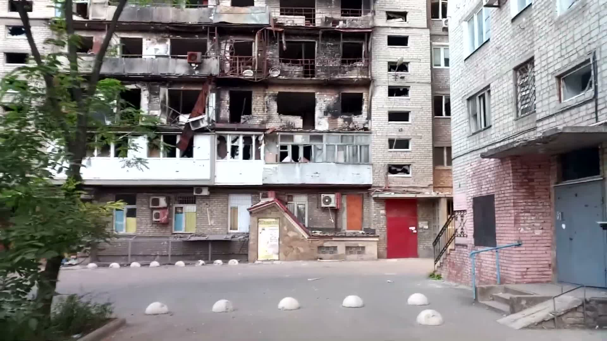
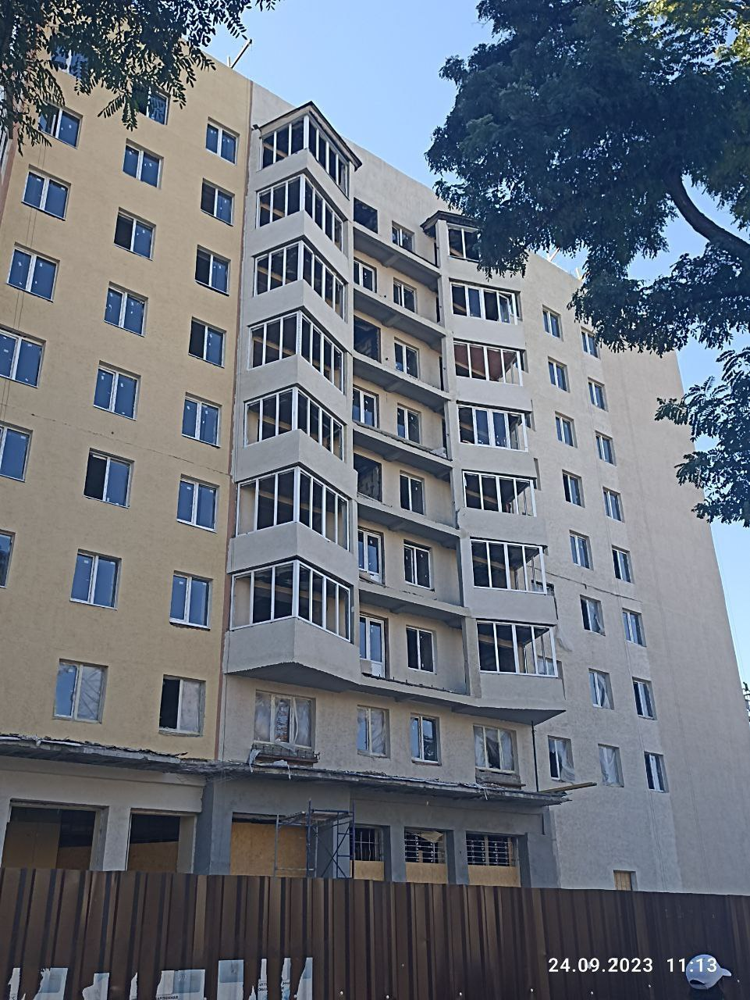
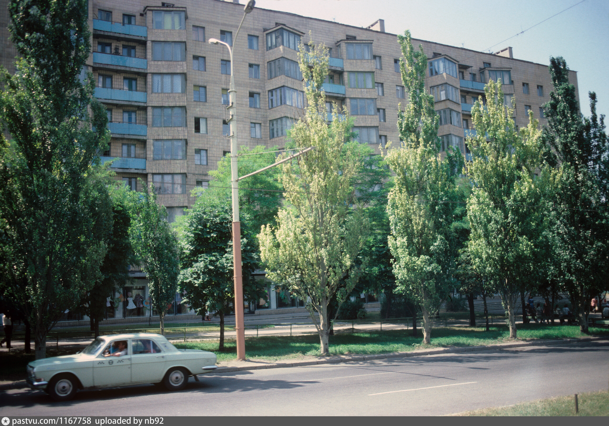
01 · The four properties
All four named individually in one demolition order
All four buildings are named individually in Demolition Decree No. 56 (29.09.2022)Распоряжение ГКО ДНР № 56 от 29.09.2022 and collectively in the residents' joint letter (§04). All four sit in the same district.
| Address | RD4U category | Apartments stripped via the registry | Confirmed physical fate |
|---|---|---|---|
| Lenina Avenue 104Pre-war (UA)просп. Миру 104Occupation (RU)просп. Ленина 104 | A3.1, A3.6 | 71 | Siege damage confirmed (2022, video); demolition NOT confirmed |
| Lenina Avenue 106Pre-war (UA)просп. Миру 106Occupation (RU)просп. Ленина 106 | A3.1, A3.6 | 72 | Siege damage confirmed; restored in place, never razed |
| Lenina Avenue 108Pre-war (UA)просп. Миру 108Occupation (RU)просп. Ленина 108 | A3.1, A3.6 | 76 | Partially demolished (1 entrance/section, video-confirmed) — NOT fully razed |
| Lenina Avenue 110Pre-war (UA)просп. Миру 110Occupation (RU)просп. Ленина 110 | A3.1, A3.6 | 64 | No visual evidence yet |
02 · The contradiction at the center of the case
Demolished on paper · restored on the ground · erased flat-by-flat regardless
Track 1 — on paper, demolished
Demolition Decree No. 56Распоряжение ГКО ДНР № 56 от 29.09.2022 lists building 106 by its full street address, marked for demolition, dated 29 September 2022. Source: the DNR Ministry of Construction's own open-data demolition register, official snapshot dated 16 March 2026.
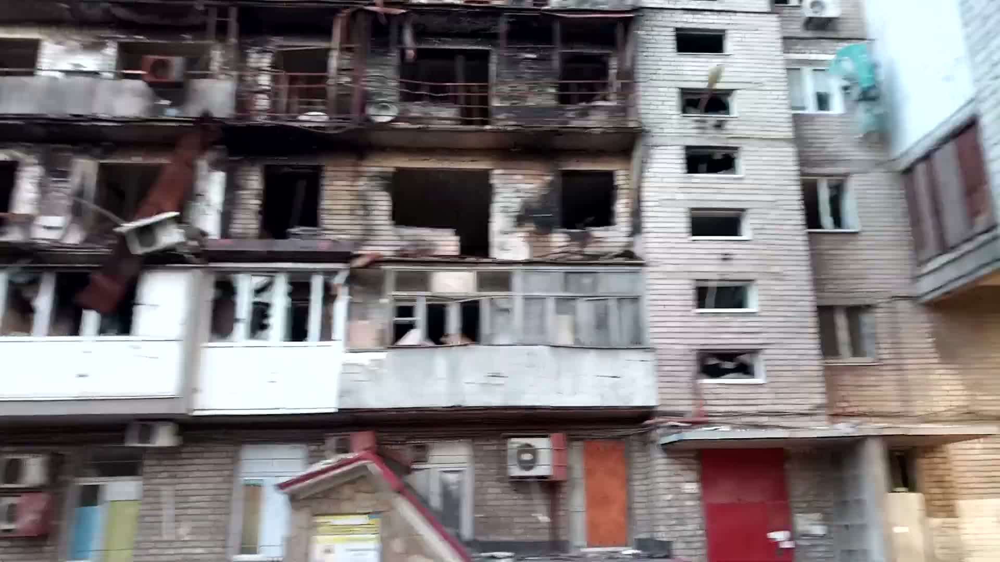
104 · courtyard · close-range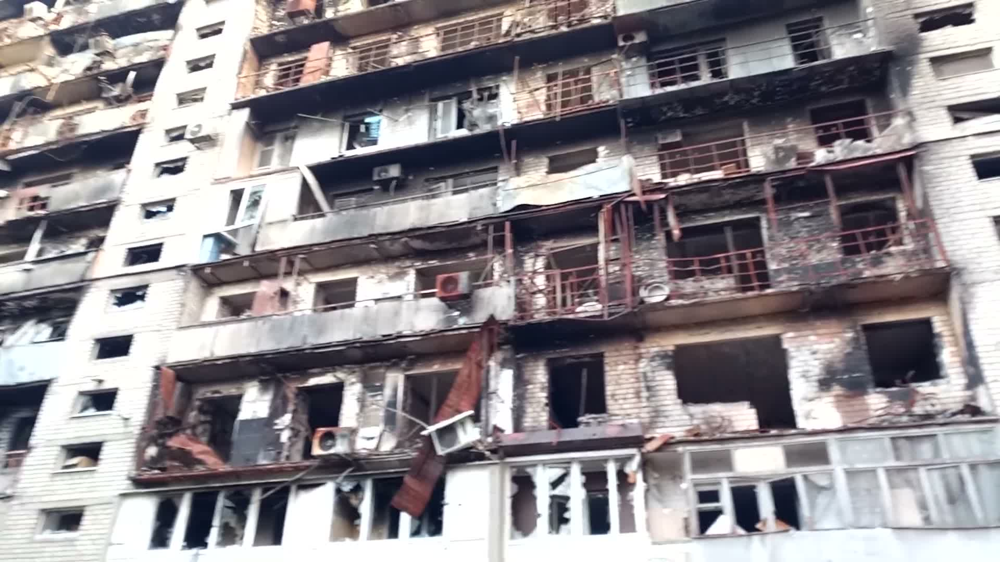
104 · courtyard · wide angle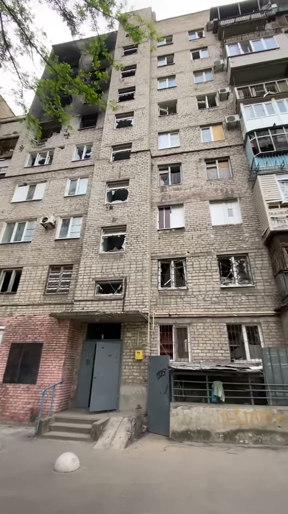
▶104 · full facade · May 2022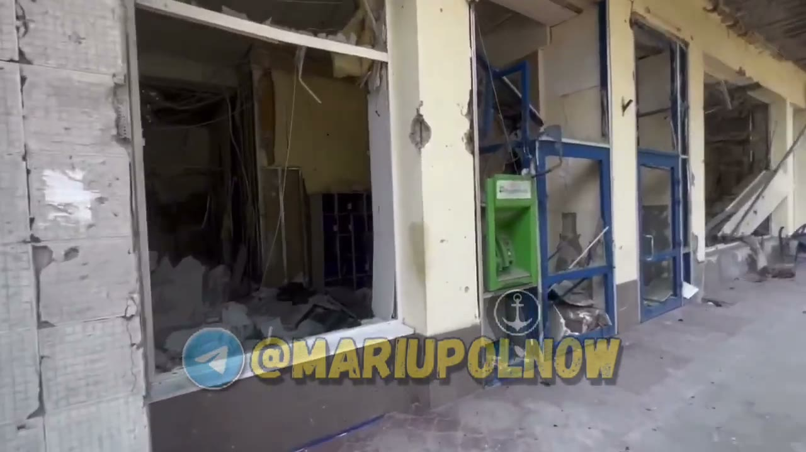
▶106 · former ATB supermarket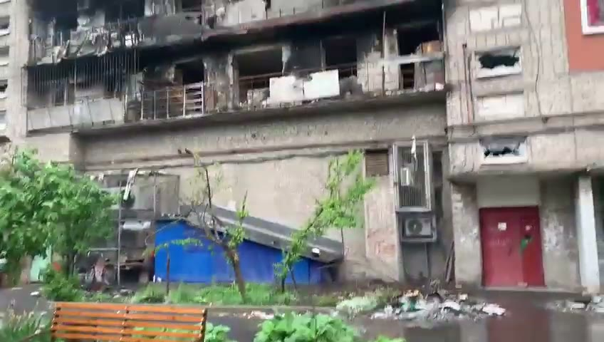
▶106 · burnt balconies · May 2022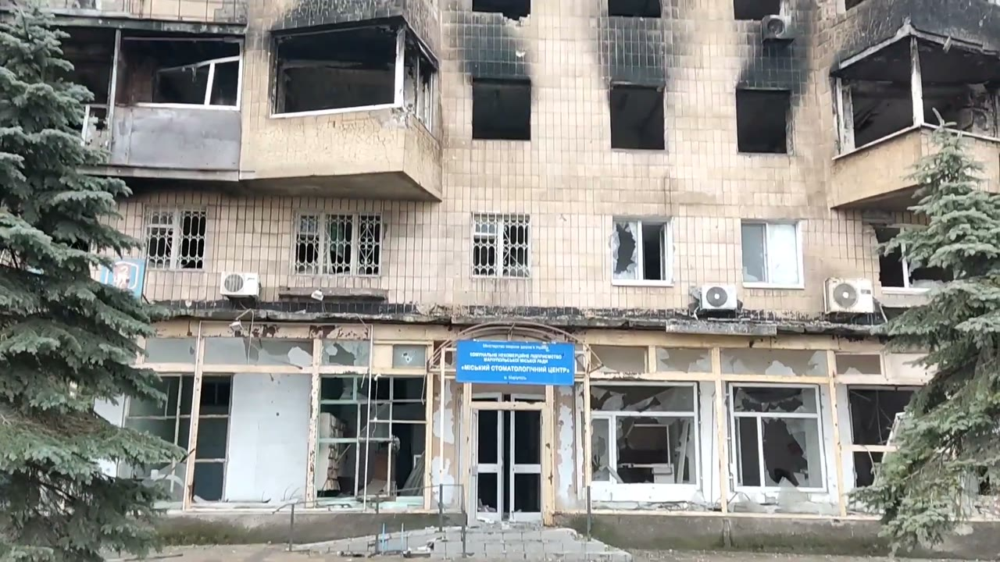
▶whole stretch · snow on ground · Feb 2023Connective rung [H] — toponymy as de-Ukrainization
The address itself is occupation-renamed. The building group's pre-war Ukrainian address was Myru Avenueпросп. Миру ("Peace Avenue") — the occupation's own street signage and this case study's title both still carry it parenthetically as "(Mira)" because the rename is recent enough that residents and even occupation paperwork have not fully converged on it. Renamed to Lenina Avenueпросп. Ленина under the same occupation street-renaming layer already documented for Myru Avenue 100 → Lenina Avenue 100 (rung [H]). As the system map notes, the specific Mariupol renaming decree is not itself on any public register; the rename is documented from independent reporting.
This is not incidental record-keeping — severing the address from its pre-war Ukrainian name is part of the same erasure this case documents at the level of ownership: a building's link to its Ukrainian past is cut on the map at the same time its individual apartments are cut from their owners in the registry. See [H]Toponymy / address laundering rung.
Track 2 — on the ground, restored, not razed
The building's own residents' Telegram chat (@Lenina106_Mariupol) shows restoration work in progress thirteen months after the demolition decree — not a cleared lot, not a new construction site:
«Строители говорят закончат тепловой контур к концу года. Уже в некоторых квартирах ведутся штукатурные работы. В сам дом никого не впускают.» "Builders say they'll finish the thermal envelope by year's end. Plastering is already underway in some apartments. Nobody is let into the building itself." Resident chat, with photo · 2023-10-05
«Почему вам не вернут вашу квартиру? Если вы собственник и есть документы… дом то не сносили…» "Why won't they give you back your apartment? If you're the owner and have the documents… the building wasn't even demolished…" Resident chat · 2023-10-05
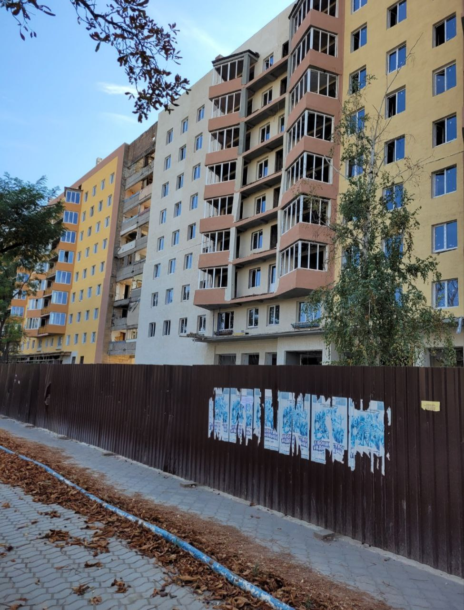
Track 3 — on paper again, erased flat-by-flat anyway
Independent of which of Tracks 1/2 is physically true, the ownerless registry processed these apartments in 106 as “ownerless” (бесхозяйные) across four dated snapshots, all while residents were demonstrably alive, organized, and petitioning for their homes:
Apartments affected (by number): 3,4,5,6,7,9,10,11,12,13,14,15,16,19,20,21, 24,25,26,27,28,29,30,31,32,34,42,44,47,48,49,51,52,54,56,58,60,62,63,64,65,66,67,68,71,72, 73,76,78,79,80,82,83,84,85,88,89,92,93,94,95,96,97,99,100,101,102,103,105,110,111,113,114, 116,121,124,125,126,128,129,132,133,137,138,140,143,145,148,149,150,153,157.
Three different buildings, three different physical outcomes (restored / partially razed / unconfirmed), but all processed identically through the registry. This is the project's reference example of a second seizure modality: administrative erasure that outruns and ignores physical reality — even when that reality itself varies building-to-building within the same decree.
03 · Track 4 — the human cost
At least seven recorded deaths across the four buildings
Independent of any of the paper tracks above, residents of these buildings died during the siege and in the months after, while the buildings' legal status was being contested on paper. A 6-person casualty record — titled "Погибшие 6ч. Мира, 110," attributed to mariupoldestruction.com — was supplied 2026-06-19 and corroborated against the named individuals' own memorial posts; a seventh, unidentified death is documented separately by the makeshift grave dug in 106's own courtyard.
- Glushko Anatoliy PetrovichГлушко Анатолий Петрович 01.07.1937 – 17.03.2022 Died in a basement from a blast head injury; the body was moved to the apartment but could not be buried due to ongoing shelling. Source: t.me/mariupolRIP/36979
- Khildunin Yevgeniy AleksandrovichХильдунин Евгений Александрович b. 17.05.1985 Died in the building; body moved to a shoe shop, collected by emergency services before Easter. Source: t.me/mariupolRIP/37382
- Malyukha AnatoliyМалюха Анатолий (unconfirmed surname spelling) b. 1943 · disabled "Burned alive," per a neighbor's account; no independent source link supplied beyond the relayed quote.
- Sister of Kovalenko Inga Yevg.Коваленко Инга Евг. unnamed · 24.03.2022 Sniper-killed near the 3rd entrance; body lay in place three days. Her identity documents and phone were later sold and used (16.04.2022) to fraudulently obtain humanitarian aid in her name.
- Afonin PyotrАфонин Пётр · Afonina KlavdiyaАфонина Клавдия residents of Lenina Avenue 110, apt 127 Named in the same casualty record for this building group.
- Unidentified — makeshift courtyard grave building 106 · date of burial not recorded A seventh death, distinct from the six named above: a makeshift grave dug in 106's own courtyard during the siege, never formally registered or identified. Counted separately because it is not one of the six names in the casualty record and its location (106) does not match where most of the six named individuals lived (110).
The document title and five of the six named individuals point to building 110; the grave is at 106. We treat the named-six record as a shared finding across all four buildings, not pinned to one; the grave is recorded against 106 specifically. These are named deceased civilians from a public memorial dataset; naming them is the documentary point and is outside this project's privacy protections for living property owners.
04 · The residents' own collective record
A letter to Putin, on-camera testimony, and a fenced-but-idle site
A joint petition, captured verbatim from the residents' chat (dated 2023-10-18), signed "Residents of 104, 106, 108 and 110 Lenina Avenue, Mariupol" and addressed to:
President of Russia Vladimir Putin · Russian Minister of Construction Irek Faizullin · DNR Minister of Construction Nikolai Tsyganov · Mariupol City Prosecutor Andrii Polishchuk · Mariupol Mayor Oleg Morgun
Polishchuk is not an imported Russian official — he is a pre-war Ukrainian district prosecutor who was wanted in Ukraine for separatism from 2014, fled to the DNR, self-declared "chief prosecutor" of occupied Horlivka, and was later installed as Mariupol's occupation prosecutor: a collaborator, not a transplant. (zradomir.com.ua; patronymic not yet confirmed in any source.)
It names the responsible construction-chain parties directly:
Developer: Russian Ministry of Construction · Client: Public-Law Company "Unified Construction Client" · General contractor: LLC "RKS-NR" From the joint letter — the same federal contractor chain already in this project's stakeholder network, click any name to open it
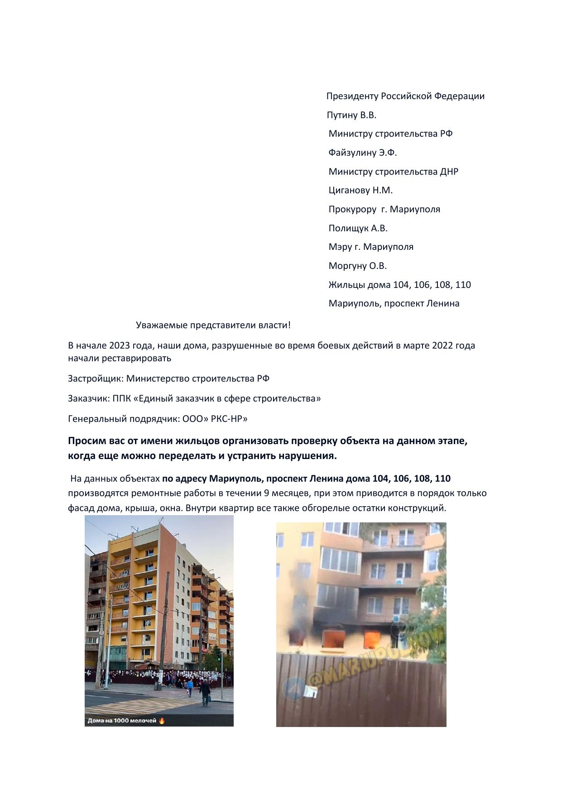
On-camera, a year later — same complaint
Residents repeat the same complaint directly to camera: work halted with no explanation, repeated new subcontractors who do nothing, ground-floor commercial space already let to a bank / flower shop / pelmennaya while residents still can't access their own apartments, and — a claim not in the written letter — apartment square footage/wall layout altered during the works ("квадратура изменилась").
05 · Paper trail, continued
Ruling No. I/3-3 — a compensation-housing list for someone else's claimants
A second document, Ruling No. I/3-3 of 13.02.2026Решение № I/3-3 от 13.02.2026 (captured from an official Mariupol information channel), was previously a scanned ruling with no extractable text layer. Now legible (2026-06-19) via a first-page render plus a full 23-page text-recognition pass: it is the Mariupol City Council'sМариупольский городской совет ДНР decision to include specific municipally-owned residential units into the list of housing that may be issued as compensation to OTHER displaced claimants — not returned to these units' original owners — citing DNR Law No. 141-RZ (18.12.2024)Закон ДНР от 18.12.2024 № 141-РЗ.
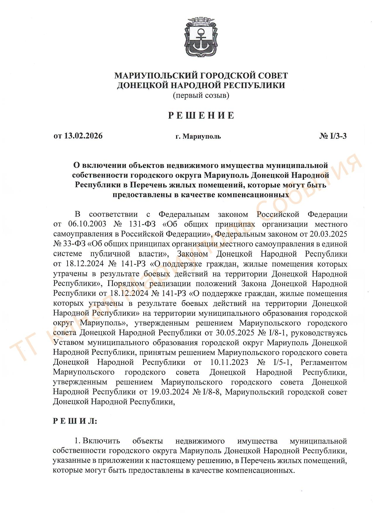
Unverified OCR lead — not a confirmed figure
OCR across the full appendix found roughly 10 units at 104, 8 at 106, and 8 at 108 (cadastral numbers recovered per-row); 110 did not show a clean match. This count is from raw OCR on a dense multi-column table and has NOT been manually verified row-by-row. Treat as a strong lead, not a confirmed figure. Next step: a structured per-row re-extraction before this count is cited as evidence-grade.
If confirmed, this is the missing reallocation endpoint for 104/106/108 — the apartments these buildings' own residents were registry-stripped from being redirected into a compensation pool for a different population of claimants, dated barely four months before this find. That would directly support the Rome Statute art. 8(2)(b)(viii) population-transfer reading with a specific dated instrument rather than an inferred pattern.
06 · Reallocation, demand side
The same stripped flats, advertised for sale
Resale evidence is now on record for 106, 108, and 110. These captures are HTML-only (Telegram widget metadata or an anti-bot listing page) — there is no screenshot asset, so each is rendered below from the captured listing detail, not a fabricated image. 104 still has no identified resale activity.
Lenina Avenue 106
t.me/Mariupol_house/84850 · listed 2024-01-24
5 mln ₽ negotiable
2-room w/ a “perekhod” (extra room) · 47.8 / 26.3 / 6.3 m² · 4/9 floor · full contractor renovation · entered on Rosreestr
First demand-side resale evidence for 106
Lenina Avenue 108
dnr.red · listed 2026-06-08 · user-saved (anti-bot site)
4 500 000 ₽
3-room, renovate to taste · total 61.3 m² (living 42.9, kitchen 5.3) · 4/9 floor · ceilings 2.50 m · balcony 0.8 m²
dnr.domick.ru companion listing still outstanding (VPS only)
Lenina Avenue 110
t.me/Mariupol_house/676643 · listed 2025-12-29
3 mln ₽ reduced
3-room · 63.4 m² · 7/9 floor · needs renovation · new wiring/water/gas/screed · entered on Rosreestr (single owner)
Corrected 2026-06-19 — earlier misattributed to 108
07 · Accountability endpoints
Every claim is supportable from the occupation's own records
CoE RD4U · Restitution
Residents cannot get inside, let alone reassert title, regardless of which paper track is "true."
Rome Statute · Criminal
Civilian harm, independent of either paper track: six residents of this building group are documented as having died during the siege and its aftermath (§03) while the buildings' legal status was contested across conflicting demolition / restoration / registry tracks. This does not change the property-law analysis — it is the human cost underlying it.
08 · Provenance · chain of custody
Reproducible from raw → DB
Every claim in this exhibit is drawn directly from an original document, video, or registry record. Each one is hashed and timestamped at the moment it was captured, so its authenticity can be independently verified later. The table below is that full chain-of-custody catalogue — the original source, capture date, and cryptographic hash for every artifact used above — kept here for anyone with a professional or legal interest in verifying the underlying evidence.
Full chain-of-custody catalogue — 22 artifacts
| Claim | Source artifact | SHA-256 | Captured |
|---|---|---|---|
| Demolition decree №56 | minstroy reestr-snosa_16_03_2026.csv | d431a530…42ea37 | 2026-06-09 |
| 72 apartments entered on the ownerless registry | Zhovtnevyi_r_n.xlsx (gosweb.gosuslugi.ru) | add72b41…85cfeae | pre-session |
| Residents barred, restoration in progress | @Lenina106_Mariupol chat photos, msgs 35/77 | 61be44fe…, 3aa8d569… | 2023-10 |
| "дом то не сносили" (rebuts demolition) | same chat, msg 37 (re-verified) | b20d2bf2… | 2023-10-05 |
| Joint letter to Putin / ministries / прокурор / мэр | Письмо в инстанции.pdf (+ p1 thumbnail) | fe670bca…77f8f36 | 2023-10-18 |
| 125 apartment-level disappearances matched to demolition event | ownerless snapshots 2024-09 → 2025-11 | per-row jsonl | 2026-06 |
| ФКРМО abandoned 106 repairs (prosecutor complaint) | @Lenina106_Mariupol msg 986 | 74b97bb3…8997bde05 | 2025-06-02 |
| Распоряжение №619 door notice (title docs demanded) | @Lenina106_Mariupol msg 269 | 1ca8ed3d…361627e05 | 2024-03-27 |
| Siege damage 104 (ground-floor storefront) | YouTube "2022.03.04 пр. Миру 104" (Near You) | 3215e47c…604d8f5 | 2022-03-04 |
| Siege damage 104 (full facade) | YouTube shorts/5fuqt-M5S6I | b1313dae…69fc9822 | 2022-05 |
| Courtyard siege damage 104 (2nd source, 3 frames) | YouTube fzN0pI8alEY | 867ab498…398749ae7 | 2026-06-19 |
| Siege damage 106 (former АТБ supermarket) | YouTube @MARIUPOLNOW | b32d1544…109506a2c | 2022-06-25 |
| Siege damage 106 (burnt balconies) | YouTube "Пр-т Мира 106 Май 22г" | c7ffa6b0…1ba8d18c | 2022-05 |
| Courtyard view 106 (less severe — consistent w/ restoration) | YouTube fzN0pI8alEY | 867ab498…398749ae7 | 2026-06-19 |
| 108 partially demolished (1 entrance, rest standing) | YouTube shorts/Bzq5QnarNAo "снос дома" | ea535398…2bb3ccab | undated |
| 108 distant restoration-in-progress view | YouTube Korzhov Vlog (single frame) | 4cb9fe0f…f961173 | 2023-08-23 |
| 1979 prewar baseline, 110 | Pastvu p/1167758 (~25m from 4423) | 10d33e28…313dc821 | 1979 |
| On-camera resident testimony (all 4) | YouTube CHrEXXI8CK0 | a8e0e253…1ecf4934 | 2026-06-19 |
| Fenced-but-idle stalled-reconstruction walkthrough | YouTube pmb7BIl-Atw (cropped 1:09-6:42) | 8867e667…e5e9b117 | 2026-06-19 |
| Resale 106 (2-room «переход», 5 млн ₽) | t.me/Mariupol_house/84850 (widget meta) | 2537366d…8bef8c45c | 2024-01-24 |
| Resale 108 (61.3 m², 4.5 млн ₽) | dnr.red, user-saved (anti-bot) | 53a2850b…550f628b | 2026-06-08 |
| Resale 110 (3-room, 63.4 m², 3 млн ₽) — corrected from 108 | t.me/Mariupol_house/676643 (widget meta) | 5a9171bd…b700aaa0 | 2025-12-29 |
| Civilian casualty record, 6 named deceased (shared) | mariupolRIP/36979, /37382 + GMyMaps "Погибшие" | 5c018486…, 40fec819…, c1f20d23… | 2026-06-19 |
| Решение №I/3-3 — compensation-housing list (OCR lead, UNVERIFIED) | Reshenie_I_3_3_ot_13.02.2026.pdf (+ p1 thumb) | 02048976…6889e215bd | 2026-02-14 |
Occupation registrations, rulings, and demolition decrees are evidence of the seizure act, NOT valid title. Ukraine does not recognise them, and neither do we. Lawful owners who are living private individuals are minimised; the named deceased civilians here are from a public memorial dataset and are recorded by name as the documentary point. The unverified OCR count in §05 is flagged as a lead, not a confirmed figure.
Support this project
The project’s author investigates and documents the dispossession of Mariupol’s residents using only his own time and resources — no editorial budget, no grants, no institutional backing. If you find this work valuable, you can help offset some of the costs I’ve incurred.